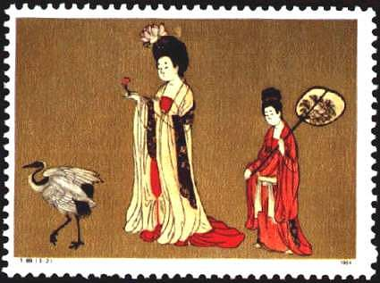
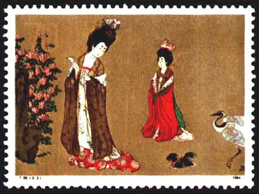
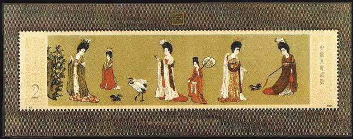

|
Page by Sier, from China |
|
<1> T89 Chinese Paintings: Beauties Wearing Flowers
in Hair, set of 3 stamps, details <2> T89M Chinese Paintings: Beauties Wearing Flowers in Hair, Miniature Sheet, the whole painting
|
C: Design: |
|
Stamp 3-2 depicts a noble woman watching the flower she holds in her right hand and a gold hairpin in her left hand, as if thinking how to set them in her hair. On the left is a crane fluttering its wings. On the right is shown a maiden holding a fan, and bending her head. |
 |
|
 |
On the stamp 3-3 there are shown two noble women. One catches a butterfly from the flowers nearby and turns slightly back to look at the dog running and snarling behind her and the slowly walking crane. Another noble young lady is straightening her sleeves and walks gracefully.
This set of stamps mainly adapts the three parts of the
painting, preserving its major features. The painting is a rich
colorful painting in traditional Chinese realistic skills
characterized by the fine brushwork and close attention to detail.
The lines are the major means for modeling in Chinese paintings. The
lines drawn on this painting are fine and colorful, simple and
expressive. The faces and hands of those noble women are drawn
precisely, refined and round and tender, a little exaggerative but
animated, for example, the delicate fingers of the butterfly -
catcher, the manner of the flower-holder, the nimble hand of the
rope-whipper. The silk clothes on those noble women appear flowing
and fluttering, showing their feel of good quality. They look
translucent and the women's skin and flesh appear almost visible
through those thin fabric. The figures of those noble women
look gracefully plump, which shows the aesthetic view people held in
the Tang Dynasty.
Figures on the painting are depicted differently, for example the mischievous and merry woman who plays with the pet dog,
the concentrated lady who examines the flower and hairpin, the
sublime woman who is taking a walk, the casual lady who holds a
butterfly, all are depicted animated. In composition, various
objects are arranged to render a sense of variation and rhythm, for
example, the ones in distance and the ones in near, the large ones
and the small ones, the ones in rest, and the ones in motion. In
coloring, the colors are bright and intensive, simple and natural.
The women's skin is painted with white powder to look like as tender
as now, as beautiful as flowers. Their clothes are painted with
complicated colors, in order to look as gorgeous as golden foils decorated
with bouquets of flowers.

<2> T89M Chinese Paintings: Beauties Wearing Flowers in
Hair [Miniature Sheet]
The sheet shows the
overall view of the painting "Ladies Wearing Flowers in
Hair", on which six women appear; five of them are noble women,
one is a maiden. One woman is looking at flowers, another is catching
butterfly, a third is taking a walk, and the fourth is playing with a pet
dog--all depicts the leisure life of nobles in palaces.
|